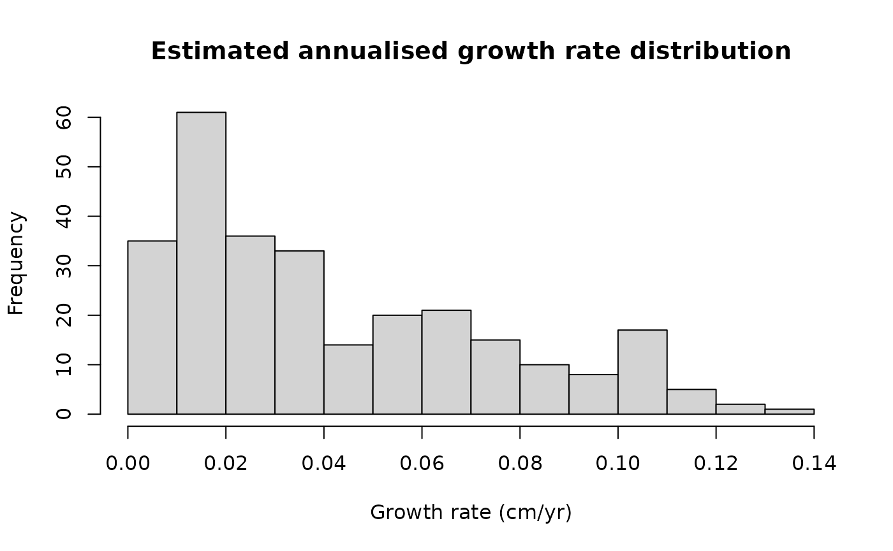

Case study 2: von Bertalanffy growth with lizard size data
Source:vignettes/von-bertalanffy.Rmd
von-bertalanffy.RmdLoad dependencies
# remotes::install_github("traitecoevo/hmde")
# install.packages(c("dplyr", "ggplot2"))
library(hmde)
library(dplyr)
#>
#> Attaching package: 'dplyr'
#> The following objects are masked from 'package:stats':
#>
#> filter, lag
#> The following objects are masked from 'package:base':
#>
#> intersect, setdiff, setequal, union
library(ggplot2)Overview
Our second demo introduces size-dependent growth based on the von Bertalanffy function where is the asymptotic maximum size and controls the growth rate. We have implemented the analytic solution which is independent of age at the starting size and instead uses the first size as the initial condition. The key behaviour of the von Bertalanffy model is a high growth rate at small sizes that declines linearly as the size approaches . This manifests as growth slowing as a creature matures with a hard finite limit on the eventual size. We restrict and to be positive. As a result the growth rate is non-negative.
Priors
The default priors for the constant top-level parameters in the single individual model are
For the multi-individual model the prior structure and default
parameters are
The max size parameter priors are always centred at the (transformed)
maximum observed size. This is not changeable, but the standard
deviation is. To see the name for the prior parameter run
hmde_model. For example in the following we want to change
the prior for
standard deviation (ind_max_size) in the individual
model:
hmde_model("vb_single_ind")
#> $n_obs
#> NULL
#>
#> $y_obs
#> NULL
#>
#> $obs_index
#> NULL
#>
#> $time
#> NULL
#>
#> $y_bar
#> NULL
#>
#> $prior_pars_ind_max_size_sd_only
#> [1] 2
#>
#> $prior_pars_ind_growth_rate
#> [1] 0 2
#>
#> $prior_pars_global_error_sigma
#> [1] 0 2
#>
#> $model
#> [1] "vb_single_ind"
#>
#> attr(,"class")
#> [1] "hmde_object"
#prior_pars_ind_max_size_sd_only is the argument name for the prior parameterVisualise model
In the following code we plot an example of the growth function and the solution to get a feel for the behaviour.
#Analytic solution in function form
solution <- function(t, pars = list(y_0, beta, S_max)){
return(
pars$S_max + (y_0 - pars$S_max)*exp(-t * pars$beta)
)
}
#Parameters
beta <- 0.35 #Growth rate
y_0 <- 1 #Starting size
S_max <- 20 #Asymptotic max size
time <- c(0,30)
pars_list <- list(y_0 = y_0,
beta = beta,
S_max = S_max)
y_final <- solution(time[2], pars_list)
#Plot of growth function
ggplot() +
xlim(y_0, y_final) +
ylim(0, beta*(S_max-y_0)*1.1) +
labs(x = "Y(t)", y = "f", title = "von Berralanffy growth") +
theme_classic() +
theme(axis.text=element_text(size=16),
axis.title=element_text(size=18,face="bold")) +
geom_function(fun=hmde_model_des("vb_single_ind"),
args=list(pars = list(S_max, beta)),
colour="green4", linewidth=1,
xlim=c(y_0, y_final))
#Size over time
ggplot() +
geom_function(fun=solution,
args=list(pars = pars_list),
colour="green4", linewidth=1,
xlim=c(time)) +
xlim(time) +
ylim(0, y_final*1.05) +
labs(x = "Time", y = "Y(t)", title = "von Bertalanffy growth") +
theme_classic() +
theme(axis.text=element_text(size=16),
axis.title=element_text(size=18,face="bold"))The von Bertalanffy model is commonly used in fishery management (Flinn and Midway 2021), but has also been used in reptile studies such as Edmonds et al. (2021) and Zhao et al. (2020).
Lizard size data
Our data is sourced from Kar, Nakagawa, and Noble (2023) which measured mass and snout-vent-length (SVL) of delicate skinks – – under experimental conditions to examine the effect of temperature on development. We are going to use the SVL metric for size.
We took a simple random sample without replacement of 50 individuals with at least 5 observations each. The von Bertalanffy model can be fit to shorter observation lengths, but fewer than 3 observations is not advised as there are two growth parameters per individual.
Implementation
The workflow for the second example is the same as the first, with the change in model name and data object.
lizard_vb_fit <- hmde_model("vb_multi_ind") |>
hmde_assign_data(data = Lizard_Size_Data) |>
hmde_run(chains = 4, cores = 1, iter = 2000)
#>
#> SAMPLING FOR MODEL 'vb_multi_ind' NOW (CHAIN 1).
#> Chain 1:
#> Chain 1: Gradient evaluation took 0.000138 seconds
#> Chain 1: 1000 transitions using 10 leapfrog steps per transition would take 1.38 seconds.
#> Chain 1: Adjust your expectations accordingly!
#> Chain 1:
#> Chain 1:
#> Chain 1: Iteration: 1 / 2000 [ 0%] (Warmup)
#> Chain 1: Iteration: 200 / 2000 [ 10%] (Warmup)
#> Chain 1: Iteration: 400 / 2000 [ 20%] (Warmup)
#> Chain 1: Iteration: 600 / 2000 [ 30%] (Warmup)
#> Chain 1: Iteration: 800 / 2000 [ 40%] (Warmup)
#> Chain 1: Iteration: 1000 / 2000 [ 50%] (Warmup)
#> Chain 1: Iteration: 1001 / 2000 [ 50%] (Sampling)
#> Chain 1: Iteration: 1200 / 2000 [ 60%] (Sampling)
#> Chain 1: Iteration: 1400 / 2000 [ 70%] (Sampling)
#> Chain 1: Iteration: 1600 / 2000 [ 80%] (Sampling)
#> Chain 1: Iteration: 1800 / 2000 [ 90%] (Sampling)
#> Chain 1: Iteration: 2000 / 2000 [100%] (Sampling)
#> Chain 1:
#> Chain 1: Elapsed Time: 10.153 seconds (Warm-up)
#> Chain 1: 7.854 seconds (Sampling)
#> Chain 1: 18.007 seconds (Total)
#> Chain 1:
#>
#> SAMPLING FOR MODEL 'vb_multi_ind' NOW (CHAIN 2).
#> Chain 2:
#> Chain 2: Gradient evaluation took 0.000101 seconds
#> Chain 2: 1000 transitions using 10 leapfrog steps per transition would take 1.01 seconds.
#> Chain 2: Adjust your expectations accordingly!
#> Chain 2:
#> Chain 2:
#> Chain 2: Iteration: 1 / 2000 [ 0%] (Warmup)
#> Chain 2: Iteration: 200 / 2000 [ 10%] (Warmup)
#> Chain 2: Iteration: 400 / 2000 [ 20%] (Warmup)
#> Chain 2: Iteration: 600 / 2000 [ 30%] (Warmup)
#> Chain 2: Iteration: 800 / 2000 [ 40%] (Warmup)
#> Chain 2: Iteration: 1000 / 2000 [ 50%] (Warmup)
#> Chain 2: Iteration: 1001 / 2000 [ 50%] (Sampling)
#> Chain 2: Iteration: 1200 / 2000 [ 60%] (Sampling)
#> Chain 2: Iteration: 1400 / 2000 [ 70%] (Sampling)
#> Chain 2: Iteration: 1600 / 2000 [ 80%] (Sampling)
#> Chain 2: Iteration: 1800 / 2000 [ 90%] (Sampling)
#> Chain 2: Iteration: 2000 / 2000 [100%] (Sampling)
#> Chain 2:
#> Chain 2: Elapsed Time: 5.51 seconds (Warm-up)
#> Chain 2: 2.978 seconds (Sampling)
#> Chain 2: 8.488 seconds (Total)
#> Chain 2:
#>
#> SAMPLING FOR MODEL 'vb_multi_ind' NOW (CHAIN 3).
#> Chain 3:
#> Chain 3: Gradient evaluation took 9.3e-05 seconds
#> Chain 3: 1000 transitions using 10 leapfrog steps per transition would take 0.93 seconds.
#> Chain 3: Adjust your expectations accordingly!
#> Chain 3:
#> Chain 3:
#> Chain 3: Iteration: 1 / 2000 [ 0%] (Warmup)
#> Chain 3: Iteration: 200 / 2000 [ 10%] (Warmup)
#> Chain 3: Iteration: 400 / 2000 [ 20%] (Warmup)
#> Chain 3: Iteration: 600 / 2000 [ 30%] (Warmup)
#> Chain 3: Iteration: 800 / 2000 [ 40%] (Warmup)
#> Chain 3: Iteration: 1000 / 2000 [ 50%] (Warmup)
#> Chain 3: Iteration: 1001 / 2000 [ 50%] (Sampling)
#> Chain 3: Iteration: 1200 / 2000 [ 60%] (Sampling)
#> Chain 3: Iteration: 1400 / 2000 [ 70%] (Sampling)
#> Chain 3: Iteration: 1600 / 2000 [ 80%] (Sampling)
#> Chain 3: Iteration: 1800 / 2000 [ 90%] (Sampling)
#> Chain 3: Iteration: 2000 / 2000 [100%] (Sampling)
#> Chain 3:
#> Chain 3: Elapsed Time: 10.159 seconds (Warm-up)
#> Chain 3: 12.238 seconds (Sampling)
#> Chain 3: 22.397 seconds (Total)
#> Chain 3:
#>
#> SAMPLING FOR MODEL 'vb_multi_ind' NOW (CHAIN 4).
#> Chain 4:
#> Chain 4: Gradient evaluation took 9.3e-05 seconds
#> Chain 4: 1000 transitions using 10 leapfrog steps per transition would take 0.93 seconds.
#> Chain 4: Adjust your expectations accordingly!
#> Chain 4:
#> Chain 4:
#> Chain 4: Iteration: 1 / 2000 [ 0%] (Warmup)
#> Chain 4: Iteration: 200 / 2000 [ 10%] (Warmup)
#> Chain 4: Iteration: 400 / 2000 [ 20%] (Warmup)
#> Chain 4: Iteration: 600 / 2000 [ 30%] (Warmup)
#> Chain 4: Iteration: 800 / 2000 [ 40%] (Warmup)
#> Chain 4: Iteration: 1000 / 2000 [ 50%] (Warmup)
#> Chain 4: Iteration: 1001 / 2000 [ 50%] (Sampling)
#> Chain 4: Iteration: 1200 / 2000 [ 60%] (Sampling)
#> Chain 4: Iteration: 1400 / 2000 [ 70%] (Sampling)
#> Chain 4: Iteration: 1600 / 2000 [ 80%] (Sampling)
#> Chain 4: Iteration: 1800 / 2000 [ 90%] (Sampling)
#> Chain 4: Iteration: 2000 / 2000 [100%] (Sampling)
#> Chain 4:
#> Chain 4: Elapsed Time: 18.877 seconds (Warm-up)
#> Chain 4: 6.061 seconds (Sampling)
#> Chain 4: 24.938 seconds (Total)
#> Chain 4:
#> Warning: There were 122 divergent transitions after warmup. See
#> https://mc-stan.org/misc/warnings.html#divergent-transitions-after-warmup
#> to find out why this is a problem and how to eliminate them.
#> Warning: There were 4 chains where the estimated Bayesian Fraction of Missing Information was low. See
#> https://mc-stan.org/misc/warnings.html#bfmi-low
#> Warning: Examine the pairs() plot to diagnose sampling problems
#> Warning: The largest R-hat is NA, indicating chains have not mixed.
#> Running the chains for more iterations may help. See
#> https://mc-stan.org/misc/warnings.html#r-hat
#> Warning: Bulk Effective Samples Size (ESS) is too low, indicating posterior means and medians may be unreliable.
#> Running the chains for more iterations may help. See
#> https://mc-stan.org/misc/warnings.html#bulk-ess
#> Warning: Tail Effective Samples Size (ESS) is too low, indicating posterior variances and tail quantiles may be unreliable.
#> Running the chains for more iterations may help. See
#> https://mc-stan.org/misc/warnings.html#tail-ess
lizard_estimates <- hmde_extract_estimates(fit = lizard_vb_fit,
input_measurement_data = Lizard_Size_Data)As before, we can compare the observed sizes over time to those predicted by the model.
measurement_data_transformed <- lizard_estimates$measurement_data %>%
group_by(ind_id) %>%
mutate(
delta_y_obs = y_obs - lag(y_obs),
obs_interval = time - lag(time),
obs_growth_rate = delta_y_obs/obs_interval,
delta_y_est = y_hat - lag(y_hat),
est_growth_rate = delta_y_est/obs_interval
) %>%
ungroup()
#Distributions of estimated growth and size
hist(measurement_data_transformed$y_hat,
main = "Estimated size distribution",
xlab = "Size (cm)")
hist(measurement_data_transformed$delta_y_est,
main = "Estimated growth increments",
xlab = "Growth increment (cm)")
hist(measurement_data_transformed$est_growth_rate,
main = "Estimated annualised growth rate distribution",
xlab = "Growth rate (cm/yr)")
#Quantitative R^2
cor(measurement_data_transformed$y_obs, measurement_data_transformed$y_hat)^2
#> [1] 0.7416779
r_sq_est <- cor(lizard_estimates$measurement_data$y_obs,
lizard_estimates$measurement_data$y_hat)^2
r_sq <- paste0("R^2 = ",
signif(r_sq_est,
digits = 3))
obs_scatter <- ggplot(data = lizard_estimates$measurement_data,
aes(x = y_obs, y = y_hat)) +
geom_point(shape = 16, size = 1, colour = "green4") +
xlab("Y obs.") +
ylab("Y est.") +
geom_abline(slope = 1, linetype = "dashed") +
annotate("text", x = 25, y = 18,
label = r_sq) +
theme_classic()
#Plots of size over time for a sample of 5 individuals
obs_est_ind <- hmde_plot_obs_est_inds(n_ind_to_plot = 5,
measurement_data = lizard_estimates$measurement_data) +
theme(legend.position = "inside",
legend.position.inside = c(0.8, 0.2))We have two parameters at the individual level and are interested in both their separate distributions, and if we see evidence of a relationship between them. We can also use the individual parameter estimates and estimated sizes to plot the growth function pieces.
#1-dimensional parameter distributions
s_max_hist <- ggplot(lizard_estimates$individual_data,
aes(ind_max_size_mean)) +
geom_histogram(bins = 10,
colour = "black",
fill = "lightblue") +
labs(x="S_max estimate") +
theme_classic()
beta_hist <- ggplot(lizard_estimates$individual_data,
aes(ind_growth_rate_mean)) +
geom_histogram(bins = 10,
colour = "black",
fill = "lightblue") +
labs(x="beta estimate") +
theme_classic()
#2-dimensional parameter distribution
par_scatter <- ggplot(data = lizard_estimates$individual_data,
aes(x = ind_max_size_mean, y = ind_growth_rate_mean)) +
geom_point(shape = 16, size = 1, colour = "green4") +
xlab("Individual max sizes (mm)") +
ylab("Individual growth rate parameters") +
theme_classic()
#Correlation of parameters
cor(lizard_estimates$individual_data$ind_max_size_mean,
lizard_estimates$individual_data$ind_growth_rate_mean,
method = "spearman")
#> [1] 0.5702281
#Plot function pieces over estimated sizes.
de_pieces <- hmde_plot_de_pieces(lizard_estimates)At the hyper-parameter level for the whole population we have centre and spread parameters for the log-normal distributions of and . As before, we can look at these as species-level features.
pars_CI_names <- c(
"mean log max size",
"mean max size in mm",
"log max size standard deviation",
"mean log growth par",
"mean growth par mm/yr",
"log growth par standard deviation"
)
#Vector that picks out which pars to be exponentiated
exp_vec <- c(FALSE, TRUE, FALSE,
FALSE, TRUE, FALSE)
#Print mean estimates and CIs
for(i in 1:nrow(lizard_estimates$population_data)){
if(!exp_vec[i]){
lizard_estimates$population_data$mean[i]
print(paste0("95% CI for ",
pars_CI_names[i],
": (",
lizard_estimates$population_data$CI_lower[i],
", ",
lizard_estimates$population_data$CI_upper[i],
")"))
} else {
exp(lizard_estimates$population_data$mean[i])
print(paste0("95% CI for ",
pars_CI_names[i],
": (",
exp(lizard_estimates$population_data$CI_lower[i]),
", ",
exp(lizard_estimates$population_data$CI_upper[i]),
")"))
}
}
#> [1] "95% CI for mean log max size: (3.17647083072528, 3.21407083090968)"
#> [1] "95% CI for mean max size in mm: (1.01045823319106, 1.04954895929649)"
#> [1] "95% CI for log max size standard deviation: (-4.14301908332485, -3.75812194862982)"
#> [1] "95% CI for mean log growth par: (0.0233751801356016, 0.237118800131887)"